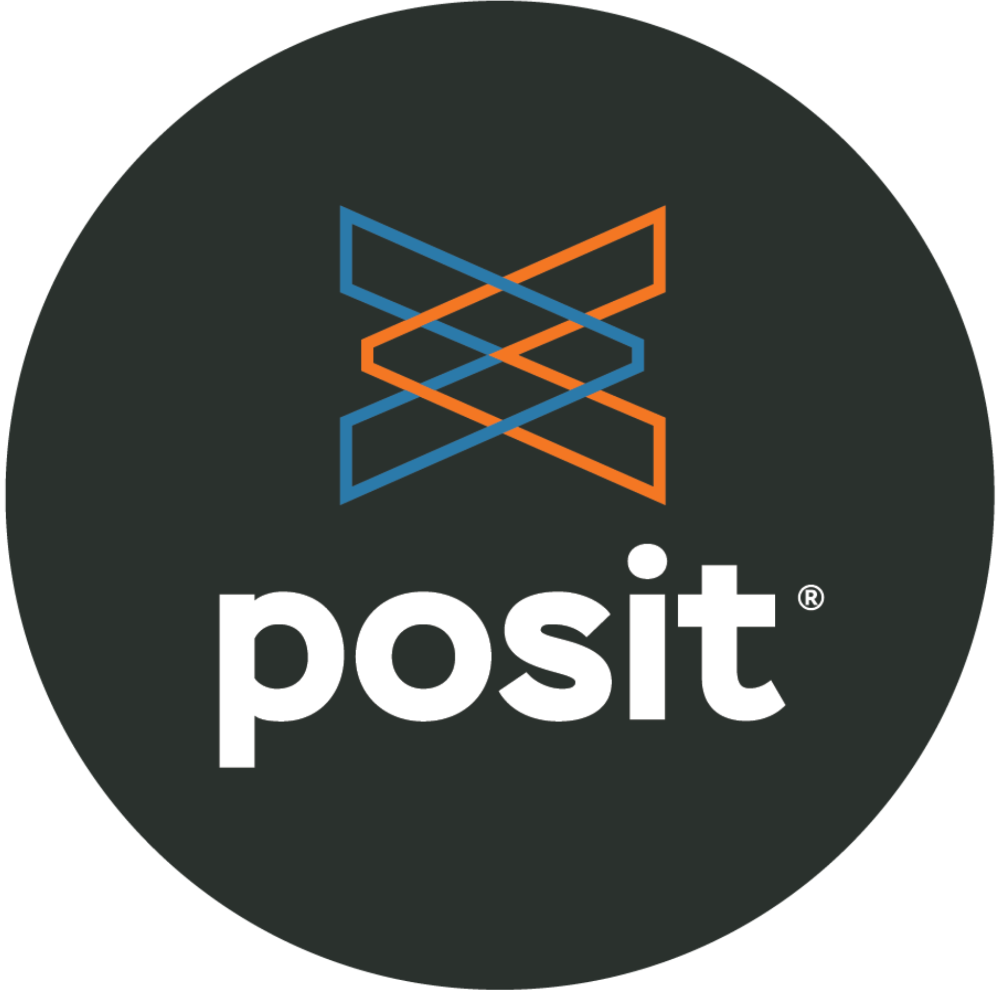
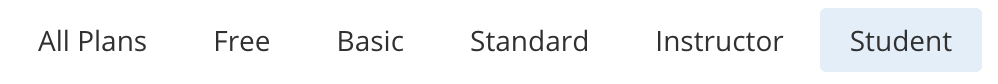

Posit Cloud ☁️
MATH/COSC 3570 Introduction to Data Science
Integrated Development Environment


R and Python are programming languages.
-
Posit Cloud offers two integrated development environments (IDE):
which are software for efficiently writing computer programs.
☁️ Posit Cloud - Data Science w/o hardware hassles
😎 Implement R/Python programs without needing to install R/Python and the IDE in your laptop!
😎 Posit Cloud lets you do, share and learn data science entirely online!
😞 Get everything ready locally: Lots of friction
- Download and install R/Python
- Download and install IDE
- Install wanted R/Python packages:
- tidymodels
- tidyverse
- NumPy
- …
- Download and install tools like Git

Install Posit Cloud
Step 2: Click GET STARTED.
Step 3: Student > Sign Up using your Marquette email address.



New Projects


- We will talk about Git/GitHub shortly.
Workspaces
- When you create an account on Posit Cloud you get a workspace of your own.
- You can add a new workspace (click + New Space in sidebar) and control its permissions.

Welcome to 3570 Data Science!
- I’m sending you a link via email for joining the course workspace 2026-spring-math-3570. Please join.

In the bar, click workspace 2026-spring-math-3570.
In the workspace, click New Project > New RStudio Project to get into the IDE.
In Untitled Project, name your project as 3570-project.
In the Console pane, write R code: a string
"Hello WoRld!"or math2 + 4.Tools > Global Options > Appearance to select your favorite editor theme.

Panes

R Script
A R script is a .R file that contains R code.
To create a R script, go to File > New > R Script, or click the green-plus icon on the topleft corner, and select R Script.

Run Code
-
Run: run the current line or selection of code.
-
ctrl + enter(Win) orcmd + enter(Mac)
-
-
Icon right to the Run: re-run the previous code.
-
alt + ctrl + p(Win) oroption + cmd + p(Mac)
-
-
Source: run all the code in the R script.
-
shift + ctrl + s(Win) orshift + cmd + s(Mac)
-
-
Source with Echo: run all the code in the R script with the code printed in the console.
-
shift + ctrl + enter(Win) orshift + cmd + enter(Mac)
-
Environment Tab
The (global) environment is where we are currently working.
Anything created or imported into the current R/Python session is stored in the environment and shown in the Environment tab.
-
After we run the R script, objects stored in the environment are
- Data set
mtcars - Object
xstoring integer values 1 to 10. - Object
ystoring three numeric values 3, 5, 9.
- Data set

Python Script
A Python script is a .py file that contains Python code.
To create a Python script, go to File > New > Python Script, or click the green-plus icon on the topleft corner, and select Python Script.

Run Python Code
Running Python code may need to update some packages. Please say YES!
When you run the Python code in the R console, or type
reticulate::repl_python(), the console will switch from R to Python.In the Python console
>>> quitto switch back to the R console.

Environment Tab
- After we run the Python script, the object stored in the environment is
- Object
bstoring a stringHello World!
- Object

History Tab
- The History tab keeps a record of all previous commands.
- save icon: save all history to a file
- To Console: send the selected commands to the console.
- To Source: inserted the selected commands into the current script.

R Packages 📦
- When we start a R session, only built-in packages like base, stats, graphics, etc are available.
- Installing packages is an easy way to get access to others data and functions.


 and more!
and more!
Installing R Packages 📦
- To install a package, for example, the ggplot2 package, we use the command
install.packages("ggplot2")- In the right-bottom pane, Packages > Install

Help
- Don’t know how a function works or what a data set is about ❓
- 👉 Simply type
?followed by the data name or function name like
?mean
?mpgWhat does the function mean() do? What is the size of mpg?